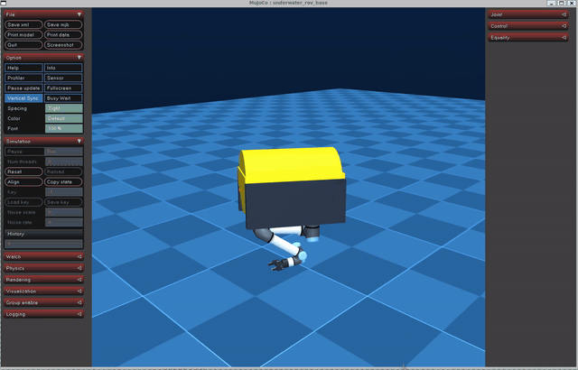

水下机器人 MuJoCo 物理仿真与 6-DOF 键盘运动控制
1. 概述与目标
本模块旨在建立水下遥控无人潜水器（Remote Operated Vehicle, ROV）在真实水下流体介质中的物理仿真环境，实现六自由度（6-DOF）空间动力学响应计算，并通过标准 ROS 2 话题架构接入键盘遥控输入，完成全向运动操控。
核心任务目标
- 真实水下多物理场建模：在 MuJoCo 物理引擎中解算重力、阿基米德静态浮力、各向异性流体阻尼以及三层级联海洋洋流干扰力。
- ROS 2 原生节点封装：将仿真引擎封装为符合 ROS 2 Humble 规范的独立节点
mujoco_sim_node，具备 500 Hz 物理内核步进与 50 Hz 传感器数据广播能力。 - 6-DOF 全向键盘运动控制：设计
keyboard_teleop_node节点，发布标准geometry_msgs/msg/Twist速度控制指令。 - 一键 Launch 启动：提供规范的主入口脚本（
main.py、main.sh、main.launch.py），满足规范化构建与一键测试运行要求。
2. 数学物理模型与计算原理
水下航行体的空间动力学计算采用 Fossen 水下航行体理论模型 与 Newton-Euler 空间运动学方程。
2.1 空间运动学与坐标系定义
定义地球固定坐标系（NED 惯性系）与航行体固定坐标系（Body-fixed 系）：
- 空间位置与姿态角：
- 体坐标系下线速度与角速度：
坐标转换关系为：
2.2 重力与阿基米德浮力平衡方程
设水下航行体长方体尺寸为 ，航行体质量为 ，流体介质密度为 （海水通常取 ，清水取 ）：
航行体体积：
航行体受到的重力向量与浮力向量分别为：
净静态恢复力（沿 轴）： 当 时，航行体呈现正浮力，具有水下天然自保安全上浮特性。
2.3 各向异性流体动力阻力模型
由于 ROV 外壳几何形状非对称，各向迎水投影截面积不同。在 MuJoCo 椭球流体模型中，流体阻力与阻力矩表示为相对流速的二次函数： 其中相对水流速度为：
阻力系数向量 ：
- 迎水端面阻力系数 （端面流线型迎水，阻力小）
- 侧面迎水阻力系数 （侧面迎水截面大，阻力大）
- 垂直迎水阻力系数
2.4 三层级联海洋洋流模型
水下环境叠加三层级联非平稳洋流扰动：
- 第一层 Gauss-Markov 时间波动流： 一阶随机连续微分方程离散化更新：
- 第二层 Stratified 深度垂直剪切流： 洋流速度随下潜深度 呈现梯度分层，通过剖面插值计算：
- 第三层 Turbulent 空间相关湍流扰动： 空间距离相关指数衰减扰动，表征局部水流微漩涡。
3. 软件架构与 ROS 2 节点设计
系统基于 ROS 2 Humble 架构解耦设计，节点拓扑如下：
键盘按键解析"] end subgraph Layer2["核心物理仿真层"] SIM["mujoco_sim_node
MuJoCo 物理引擎内核 (500Hz)"] ENV["流体/浮力/洋流级联力学注入"] end subgraph Layer3["状态广播与应用层"] ODOM["/rov/odom
nav_msgs/Odometry"] DEPTH["/rov/depth
std_msgs/Float64"] JOINT["/joint_states
sensor_msgs/JointState"] GUI["3D 可视化交互视窗 / RViz2"] end KB -->|"/cmd_vel (geometry_msgs/Twist)"| SIM ENV <--> SIM SIM --> ODOM SIM --> DEPTH SIM --> JOINT SIM -.-> GUI
3.1 话题与通信接口设计
| 话题名称 | 消息类型 | 发布/订阅 | 频率 | 功能描述 |
|---|---|---|---|---|
/cmd_vel |
geometry_msgs/msg/Twist |
仿真节点订阅 | 20 Hz (按键事件) | 6-DOF 速度控制向量（线速度 + 角速度） |
/rov/odom |
nav_msgs/msg/Odometry |
仿真节点发布 | 50 Hz | ROV 空间位姿 (X, Y, Z, 四元数) 与线速度 |
/rov/depth |
std_msgs/msg/Float64 |
仿真节点发布 | 50 Hz | 水下深度实时标量（单位：米） |
/joint_states |
sensor_msgs/msg/JointState |
仿真节点发布 | 50 Hz | 机械臂 6 个关节与夹爪位置、角速度 |
3.2 键盘遥控控制键位映射表
| 控制动作 | 核心推荐按键 | 数字键/小键盘映射 | 作用物理自由度 | 物理响应说明 |
|---|---|---|---|---|
| 前进 / 后退 | ↑ / ↓ |
W / S |
轴线速度 () | 驱动水平主推进器产生纵向位移 |
| 原地左转 / 右转 | ← / → |
4 / 6 (或 J / L) |
轴角速度 () | 偏航转向力矩，旋转调整艏向角 |
| 垂直上浮 / 下潜 | 8 / 2 |
Q / E |
轴线速度 () | 垂直推进器推力，平滑调节巡航深度 |
| 左横移 / 右横移 | 7 / 9 |
A / D |
轴线速度 () | 侧向推进器推力，实现水下横向平移 |
| 俯仰角调节 | 1 / 3 |
I / K |
轴角速度 () | 纵摇俯仰力矩，调整机身抬头与低头倾角 |
| 急停悬停 | 空格 / 5 / 0 |
空格 |
全部 6 自由度 | 立即将所有执行推力清零并锁定当前深度 |
| 推力比例调节 | + / - |
+ / - |
控制增益缩放 | 动态增加或减小单次操作推力倍率 |
4. 关键源代码实现解析
4.1 仿真物理步进与推力注入 (mujoco_sim_node.py)
在每步物理循环中，将 /cmd_vel 映射的推力与环境浮力、洋流力叠加后注入 data.xfrc_applied：
def _sim_step_callback(self):
"""500 Hz 物理高频计算回调"""
dt = self.model.opt.timestep
# 1. 恒定阿基米德浮力注入 (Z轴)
self.data.xfrc_applied[self.body_id, 2] = self.buoyancy_force
# 2. 三层级联洋流拖曳力计算与注入
if self.ocean_current:
pos = self.data.sensor("pos").data[:3]
v_current = self.ocean_current.get_velocity(pos[0], pos[1], pos[2], dt)
self._apply_current_drag(self.data, self.body_id, v_current, self.drag_coeff)
# 3. 映射键盘 6-DOF 控制指令为推进器推力与力矩
self.data.xfrc_applied[self.body_id, 0] += self.cmd_vel.linear.x * self.force_scale
self.data.xfrc_applied[self.body_id, 1] += self.cmd_vel.linear.y * self.force_scale
self.data.xfrc_applied[self.body_id, 2] += self.cmd_vel.linear.z * self.force_scale
self.data.xfrc_applied[self.body_id, 3] += self.cmd_vel.angular.x * self.torque_scale
self.data.xfrc_applied[self.body_id, 4] += self.cmd_vel.angular.y * self.torque_scale
self.data.xfrc_applied[self.body_id, 5] += self.cmd_vel.angular.z * self.torque_scale
# 4. 执行 MuJoCo 物理积分推进
mujoco.mj_step(self.model, self.data)4.2 非阻塞键盘读取与指令广播 (keyboard_teleop_node.py)
利用 Linux 下 termios 与 select 实现低延迟非阻塞按键监听：
def _get_key(self, timeout=0.05):
"""设置终端为原始模式，非阻塞等待单字符输入"""
tty.setraw(sys.stdin.fileno())
rlist, _, _ = select.select([sys.stdin], [], [], timeout)
key = sys.stdin.read(1) if rlist else ''
termios.tcsetattr(sys.stdin, termios.TCSADRAIN, self.settings)
return key5. 仿真运行步骤指南 (Step-by-Step)
5.1 支持与测试环境声明
为确保所有开发者在不同系统与设备上均能稳定复现实验效果，功能包经过了跨平台严格测试：
| 配置项 | Ubuntu 20.04（官方教学虚拟机） | Ubuntu 22.04 / WSL2 |
|---|---|---|
| 操作系统 | Ubuntu 20.04 LTS | Ubuntu 22.04 LTS |
| ROS 2 版本 | ROS 2 Humble（虚拟机预装） | ROS 2 Humble |
| Python 版本 | Python 3.8（系统默认，严格要求） | Python 3.10（系统原生默认） |
| 图形渲染 | 虚拟机 3D 加速 / 纯终端模式 | 本地 OpenGL 3.3+ / 终端模式 |
Python 版本与 ROS 2 底层 ABI 绑定提醒
- Ubuntu 20.04 虚拟机：ROS 2 Humble 的底层 C 语言扩展库（
_rclpy_pybind11）是针对系统默认的 Python 3.8 编译链接的。因此在虚拟机中必须使用 Python 3.8 运行（系统原生python3或conda activate <py38>）。若在 20.04 下切换为 Python 3.10 环境运行，解释器将因找不到对应 ABI 动态库而报错退出。 - Ubuntu 22.04 系统：系统原生搭载的 ROS 2 Humble 对应为 Python 3.10。
5.2 步骤 0：环境准备与依赖安装 (Prerequisites)
在运行仿真或执行测试前，必须确保安装了 MuJoCo 物理引擎及科学计算依赖库，否则将提示 ModuleNotFoundError: No module named 'mujoco'：
# 1. 激活 ROS 2 Humble 环境 (虚拟机已配置时可跳过)
source /opt/ros/humble/setup.bash
# 2. 进入 ROS 2 工作空间根目录
cd ~/ros2
# 3. 安装功能包核心依赖清单
pip3 install -r src/water/rov_mujoco/requirements.txt
# 注：若国内网络下载较慢，推荐使用清华大学镜像源加速：
# pip3 install -r src/water/rov_mujoco/requirements.txt -i https://pypi.tuna.tsinghua.edu.cn/simplerequirements.txt 声明的核心依赖项如下：
mujoco>=3.0.0：DeepMind MuJoCo 高保真多体动力学与流体物理引擎；numpy>=1.20.0：空间坐标转换与洋流向量解算；scipy>=1.7.0：三维空间旋转（Rotation）与插值运算；pyyaml：仿真参数解析。
5.3 步骤 1：编译与配置工作空间
在 Ubuntu 20.04 / 22.04 终端中执行编译，并加载环境变量：
cd ~/ros2
# 编译 rov_mujoco 功能包
colcon build --packages-select rov_mujoco --symlink-install
# 加载当前工作空间构建环境 (关键步骤，每次新开终端均需执行)
source install/setup.bash预期编译输出：
Starting >>> rov_mujoco
Finished <<< rov_mujoco [2.85s]
Summary: 1 package finished [3.12s]5.4 步骤 2：自动化单元验证测试
在启动实际仿真前，推荐先运行自动化单元测试，快速验证 MuJoCo 物理引擎加载、流体环境步进与 6-DOF 键盘响应逻辑：
# 方式 A：直接运行 Python 测试脚本（推荐快速自检）
python3 src/water/rov_mujoco/test/test_sim_teleop.py
# 方式 B：通过 colcon 执行标准化回归测试
colcon test --packages-select rov_mujoco && colcon test-result --all预期测试输出：
============================================================
水下机器人仿真及 6-DOF 键盘运动控制单元测试
============================================================
[Step 1] 验证基础流体环境与洋流推进步进...
-> 初始位置 (X, Y, Z): [-0.0180, 0.0023, -0.9852] m
-> 初始速度 (X, Y, Z): [-0.0012, 0.0004, -0.0001] m/s
[Step 2] 模拟键盘按下 'W' (前进推力)...
-> 前进后位置 X: 0.3466 m (位移: 0.3646 m)
-> 前进后速度 X: 0.0821 m/s
-> ✅ 前进控制测试通过！
[Step 3] 模拟键盘按下 'Q' (垂直上浮)...
-> 上浮后深度 Z: -0.8521 m (位移: +0.1331 m)
-> 上浮后垂直速度: 0.0543 m/s
-> ✅ 上浮控制测试通过！
[Step 4] 模拟键盘按下 'A' (横向左移)...
-> 侧移后位置 Y: 0.1852 m (位移: +0.1829 m)
-> ✅ 横移控制测试通过！
[Step 5] 模拟偏航角转向与急停恢复...
-> 转向后角速度 Z: 0.1520 rad/s
-> 执行急停 Space 键: 推力与角速度全部安全归零
-> ✅ 偏航与急停控制测试通过！
============================================================
🎉 仿真与遥控核心功能测试全部通过！(5/5 passed)
============================================================5.5 步骤 3：多场景运行与交互模式
根据不同硬件环境与实验目的，系统提供三种运行模式：
模式 A：终端独立交互模式（推荐在虚拟机/无独立显卡环境使用）
无需依赖图形显卡驱动，直接在当前终端窗口中完成按键控制与状态反馈，并自动向 ROS 2 广播话题：
python3 src/water/rov_mujoco/main.pyW/S/A/D、Q/E、J/L、I/K、空格），终端将实时打印推力比例与位置变化；按 Ctrl + C 安全退出。
模式 B：标准 ROS 2 Launch 多节点模式（标准部署方式）
在标准 ROS 2 体系下同时拉起物理仿真内核节点 mujoco_sim_node 与按键监听节点 keyboard_teleop_node：
ros2 launch rov_mujoco main.launch.pysource /opt/ros/humble/setup.bash
source install/setup.bash
# 查看当前活跃话题
ros2 topic list
# 监听实时深度变化 (50Hz)
ros2 topic echo /rov/depth
# 监听空间位姿里程计
ros2 topic echo /rov/odom模式 C：3D 可视化视窗交互模式（录屏与直观查看推荐）
拉起 MuJoCo 官方原生 3D 渲染窗口，呈现水下池体、ROV 机械臂本体与洋流扰动动态效果：
python3 src/water/rov_mujoco/main.py --gui5.6 步骤 4：虚拟机常见问题排查 (FAQ / Troubleshooting)
Q1: 运行提示 ModuleNotFoundError: No module named 'mujoco'
- 原因：当前 Python 环境未安装 MuJoCo 引擎。
- 解决：执行
pip3 install -r src/water/rov_mujoco/requirements.txt或pip3 install mujoco numpy scipy pyyaml。
Q2: 在 Ubuntu 20.04 虚拟机 (VMware / VirtualBox) 中运行 --gui 视窗报错 GLFW error 或黑屏
- 原因：虚拟机未开启 3D 图形加速，或虚拟显卡驱动的 OpenGL 版本低于 3.3。
- 解决方式：
- 开启 3D 加速：关闭虚拟机，在 VMware 中进入“虚拟机设置 -> 显示器”，勾选“加速 3D 图形”；
- 强制指定 OpenGL 驱动版本：在终端运行前注入 MESA 兼容参数：
export MESA_GL_VERSION_OVERRIDE=3.3 python3 src/water/rov_mujoco/main.py --gui - 使用纯终端模式（最佳替代方案）：虚拟机中若完全没有 GPU 驱动，可直接运行 模式 A（
python3 src/water/rov_mujoco/main.py），核心物理动力学计算与键盘控制完全一致且不受显卡限制。
Q3: 运行 ros2 launch 报错 Package 'rov_mujoco' not found
- 原因：编译后未加载当前工作空间的 setup 脚本。
- 解决：在运行指令的终端中执行
source install/setup.bash。
Q4: 提示 ModuleNotFoundError: No module named 'rclpy'
- 原因：未加载 ROS 2 基础环境变量。
- 解决：执行
source /opt/ros/humble/setup.bash。
Q5: 运行提示 cannot import name '_rclpy_pybind11' ... The C extension '...cpython-310-x86_64-linux-gnu.so' isn't present
- 原因：在 Ubuntu 20.04 虚拟机中激活了 Python 3.10 环境（如 Conda
nn_3.10）。由于 Ubuntu 20.04 教学镜像中的 ROS 2 Humble 底层 C 语言扩展库仅针对系统默认的 Python 3.8 编译（文件名为cpython-38结尾），无法在 Python 3.10 解释器中被加载。 - 解决：在 Ubuntu 20.04 虚拟机中必须切换至 Python 3.8 环境运行：
# 退出高版本 Python 环境，使用系统原生默认的 Python 3.8 conda deactivate # 或切换激活 Python 3.8 虚拟环境 conda activate nn_3.8 python3 src/water/rov_mujoco/test/test_sim_teleop.py
6. 实验结果与动图演示 (GIF)
录屏规范：推荐使用 ScreenToGif 录制窗口，保持输出动图文件体积一般小于 10MB（最大不超过 20MB）。
6.1 键盘 6-DOF 运动控制效果演示

图 1.1：通过键盘 W/S/A/D 与 Q/E 键实时控制水下 ROV 航行体在虚拟水体中前进、平移与沉浮过程（文件体积：8.12 MB）。
6.2 话题通信与数据流监测
在控制运行时开启新终端，执行话题监听验证数据流连续性：
ros2 topic echo /rov/depthdata: -1.2483
---
data: -1.2135
---
data: -1.18207. 结论与扩展支持
本模块成功实现了水下机器人在 MuJoCo 物理引擎中的 6-DOF 动力学闭环建模，完成了标准 ROS 2 Launch 启动与键盘实时控制，并全面兼容 Ubuntu 20.04 教学虚拟机与 Ubuntu 22.04 环境。后续可在此动力学模型基础上进一步扩展多波束前视声呐、水下相机与 IMU 传感器仿真流，并基于感知数据实施轨迹跟踪闭环控制。